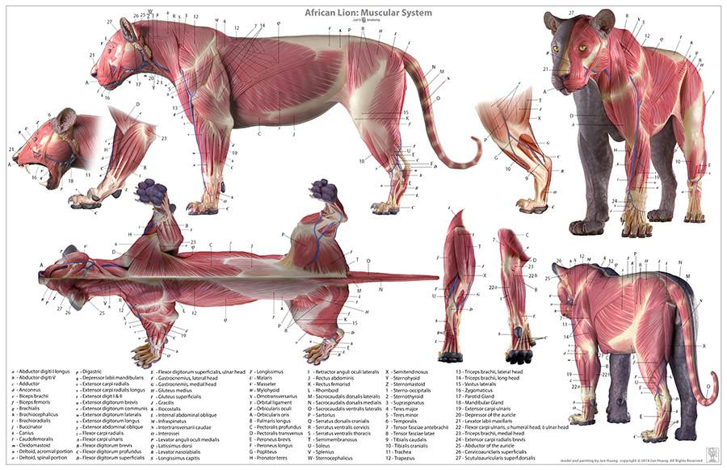

Lion Anatomy
Both the female and male lions are similar in colour this being a golden/tan colour. Their colouration helps them to camouflage themselves among the light coloured savanna grass.
Although male lions and female lions are similar in a lot of ways, one distinct difference separates them. The male lion has a large bushy mane that stretches from his head, down his neck and covers the beginning of his back. The mane ranges in colour, from light tan, dark brown to black. Because the mane is very thick, it helps the male lion when he is in conflict by protecting his neck and also makes him appear larger which can intimidate his competitor.
The female (lioness) does not have a mane. She looks very much like a very large normal feline cat. The mane of a male lion is used to identify their strength. The bigger the mane, the stronger the lion.
Height: Male: 1.2 m (Adult, At Shoulder), Female: 1.1 m (Adult, At Shoulder)
Mass: Male: 190 kg (Adult), Female: 130 kg (Adult)
Lion's respiration : They breath through the nostrils, mouth and lungs
LION ADAPTIONS
A lions colour blends with their habitat which helps them to camouflage and pounce on unsuspecting prey. The lion is a typical cat in overall structural adaptations. With powerful legs, a strong jaw and long canine teeth, the lion can bring down and kill large prey.
A lion is a digitigrade, or toe walker; whereby their heels do not touch the ground. A lions loud roar is made possible by the cartilage in their throat having ossified into bone (referred to as the Hyoid structure). This is true of all the big cat or roaring species. The smaller cats with the softer throat structure can only meow.
Like all members of the cat family, lions are very agile animals. Lions can climb and are often observed resting on high branches of trees.